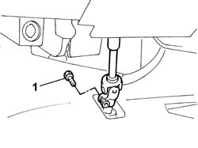
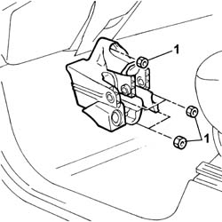

3330B38 pedal unit mount - r r
- Path
- Procedures > 33 BRAKES > 3330 HYDRAULIC BRAKE SYSTEM > 3330B pedal unit > 3330B38 pedal unit mount - r r
- Kind
- repair procedure (removal / refitting; the operation number is the code)
- Applies to
- all engines; all production periods
- Interactive page
- https://sloeber94.github.io/elrnDB-fDbl/en/#/2584653
Applies to: engines: 1.2 8v; all production periods
 Removing
Removing
 Refitting
RefittingApplies to: all engines; all production periods
Refitting
RemovingPlace the pedal mount in the car and secure by means of the retaining nuts.
 | Fastening | Component | Ø | Value (daNm) |
|---|---|---|---|---|
- | Nut | PEDAL MOUNT | M8 | 2.8 |
Insert the lower steering column shaft into the steering box pinion and secure using the bolt.
| Fastening | Component | Ø | Value (daNm) |
|---|---|---|---|---|
- | Bolt | STEERING SHAFTS | M8 | 3.7 |
.
Applies to: engines: 1.2 8v; all production periods
Applies to: engines: 1.9 DIESEL; all production periods
Applies to: engines: 1.2 8v, 1.9 DIESEL; all production periods
Op. 5550D10 BRAKE LIGHT SWITCH - R+R.
Op. 3330B22 BRAKE PEDAL - R+R FOR MANUAL GEARBOX VERSIONS.
.
1. Undo the bolt securing the lower steering column shaft to the pinion on the steering box; place the lower steering column shaft to one side.

Applies to: engines: 1.2 8v, 1.9 DIESEL; all production periods
1. Undo the nuts securing the pedal mount to the body and remove.

Applies to: engines: 1.9 DIESEL; all production periods